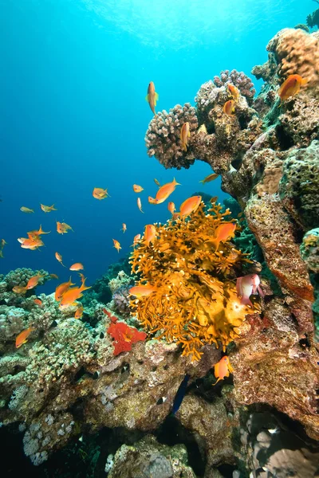
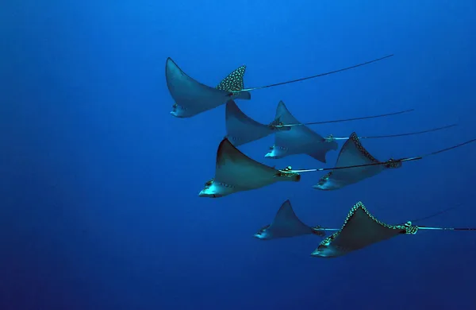
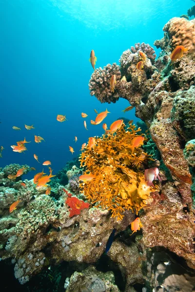
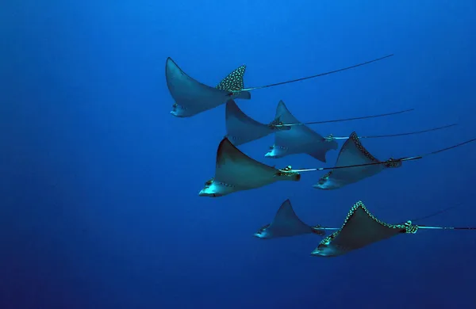

Espécies Marinhas
Os oceanos abrigam uma enorme variedade de espécies, desde pequenos plânctons até baleias gigantes. Alguns exemplos notáveis incluem:
- Golfinhos: Mamíferos conhecidos por sua inteligência e comportamento social.
- Tartarugas Marinhas: Espécies como a tartaruga-verde, ameaçada pela poluição e pesca.
- Peixes-Palhaço: Famosos por sua relação simbiótica com anêmonas.
Habitats Marinhos
Os habitats marinhos incluem recifes de coral, profundezas abissais, manguezais e oceanos abertos. Cada um sustenta uma biodiversidade única:
- Recifes de Coral: Abrigam 25% da vida marinha, conhecidos como "florestas tropicais dos oceanos".
- Zonas Abissais: Lar de criaturas incríveis, como o peixe-diabo-negro e os camarões bioluminescentes.
- Manguezais: Importantes áreas de berçário para peixes e crustáceos.
Conservação Marinha
A preservação dos oceanos é essencial para o equilíbrio do planeta. Esforços incluem:
- Redução da Poluição: Combate ao plástico e ao lixo nos oceanos.
- Áreas de Proteção: Criação de zonas de preservação marinha.
- Educação: Conscientização sobre o impacto humano na vida marinha.
Galeria
Confira algumas imagens incríveis do mundo subaquático:
 



Perguntas Frequentes
Por que os oceanos são importantes?
Os oceanos regulam o clima, fornecem oxigênio e são uma importante fonte de alimentos e recursos.
Como podemos ajudar na conservação marinha?
Reduzindo o uso de plástico, apoiando áreas de proteção marinha e participando de projetos de conscientização.
Qual é o impacto das mudanças climáticas na vida marinha?
As mudanças climáticas afetam os habitats, causam acidificação dos oceanos e ameaçam espécies sensíveis.
Contato
Quer saber mais ou participar de projetos de conservação? Entre em contato conosco: